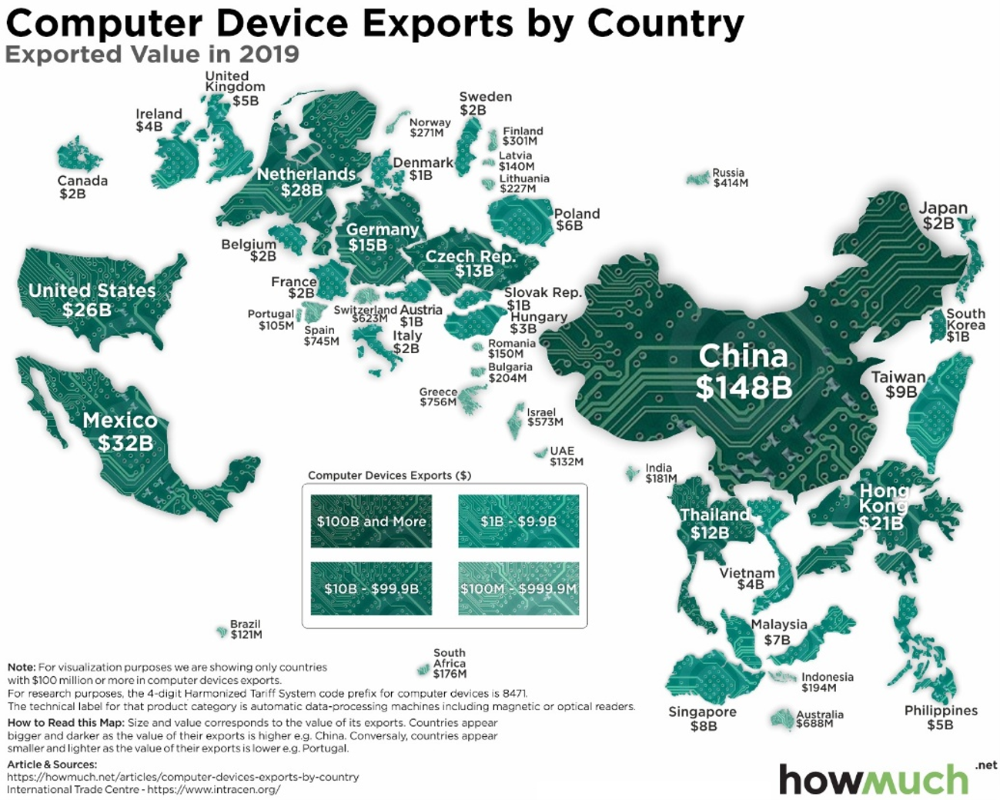

The Visualisation

Figure 1 presents the global export values for computer devices in 2019, using data sourced from the International Trade Center (ITC). Each country is represented according to the total value of its computer device exports, and it's my task to validate that the creator has represented the source data correctly!
Variables
| Variable | Type of Variable | Unit | Level of Measurement |
|---|---|---|---|
| Country | Qualitative, Categorical | N/A | Nominal |
| Computer Device Export Value | Quantitative, Continuous | US Dollars (USD) in millions or billions | Ratio |
1. Country
As summarised in Table 1, country is a categorical variable with no unit of measurement. Additionally, it is measured at the nominal level since they are distinct categories, and there are no rankings or intervals between the countries themselves.
This is visually encoded using the country’s respective silhouette, and their accompanying labels. There is also some regional clustering in terms of continents; i.e. European countries are kept in a similar position to where they would appear on a typical map.
2. Computer Device Export Value
As summarised in Table 1, computer device export value is a quantitative variable measured in US dollars and is displayed on the visualisation as either in millions or billions of dollars. Additionally, it is measured at the ratio level since there is an absolute zero point; i.e. no computer device exports would result in a value of $0, and meaningful ratios can be calculated between the values. Since it is measured at a ratio level, the computer device export value is continuous since these values could theoretically be infinite within some given range.
The export value of computer devices per country is visually encoded in multiple ways. Firstly, the most prominent technique regards the area/size of the country; the larger the country, the higher the export value. For instance, evidence of this can be seen by a comparison of China against Brazil, where there is a very significant size difference due to their varying export value. Secondly, another obvious visual encoding of this export value is through the use of labels for each country, clearly stating the export value in USD. Lastly, a comparatively less prominent method is the colour of each country, as evident using the legend toward the bottom-middle of the data visualisation.
Data and Question Alignment
There is strong alignment between the data (D) and the question (Q) posed by the data visualisation (Figure 1). The question can be interpreted as “Which countries exported the most computer devices in 2019, and how did their export values compare?” The data directly answers this question by providing the numerical value, in USD, from every reporting country that accumulated an export value of at least $100 million, in 2019. This makes it possible to compare countries and identify the largest exporters of computer devices. For instance, it is evident that China is the largest exporter, while in the data visualisation, Brazil is the smallest exporter of computer devices. Hence, the data and question are strongly aligned.
Data Comparison and Verification
The values represented in the HowMuch visualisation were compared with the 2019 export data for HS code 8471 obtained from the International Trade Center (ITC) Trade Map database. The large majority of the values shown in the visualisation could be verified against the source data; minor discrepancies were mostly caused by HowMuch rounding export quantities to the closest million or billion USD. For instance, Canada’s export value was presented as $2B, while the ITC database reports that the value was $1.6B, which frankly is a large amount of money to be rounding upwards. Similarly, Mexico was presented as $32B, while the ITC database reports ~$32.3B. However, these were not the main concerns regarding this data visualisation. Table 2, below, summarises the largest discrepancies found by comparison of the data:
| Country | HowMuch Data Visualisation | ITC Trade Map Database |
|---|---|---|
| Netherlands | $28B | ~ $11B |
| United Arab Emirates | $132M | ~ $4.34B |
| Israel | $573M | ~ $576M |
| Panama | N/A | ~ $319M |
| Lithuania | $227M | ~ $296M |
| Indonesia | $194M | ~ $236M |
| Bulgaria | $204M | ~ $201M |
| Chile | N/A | ~ $115M |
| Portugal | $105M | ~ $99.7M |
As presented in Table 2, it is clear that two serious discrepancies have been found regarding the Netherlands and the United Arab Emirates. Netherlands is reported by HowMuch as having $28 billion in exports, whereas the 2019 ITC data reports approximately $11 billion. Similarly, the United Arab Emirates is shown by HowMuch as exporting only $132 million, while the ITC reports approximately $4.34 billion. These discrepancies are far too serious to be attributed to rounding errors, and HowMuch therefore misrepresents the importance of these countries in the data visualisation. Israel, Lithuania, Indonesia and Bulgaria also demonstrate fairly large differences, but do not compare to the severity of the discrepancies found for the Netherlands and the United Arab Emirates.
Additionally, inconsistencies in the countries included in the visualisation were determined. HowMuch includes Portugal in their visualisation with a reported value of $105M, while the ITC reports approximately $99.7M. However, HowMuch states that only countries with at least $100M in exports were to be included in their visualisation, and thus, Portugal should not have been included. On the contrary, Panama and Chile were both not included in the data visualisation despite the ITC having reported 2019 export values of $319M and $115M, respectively. However, there may also be a possibility that these two countries were covered by the information included at the bottom right-hand corner of the visualisation. Brazil is toward the bottom of the visualisation, and hence, due to the geographic clustering, Panama should be displayed above Brazil in Central America, and Chile should be below Brazil as part of South America.
Since the ITC Trade Map that I have been able to access for 2019 may not include exactly the same version of the data that HowMuch first accessed, it is plausible that some of the discrepancies are the consequence of changes made to the statistics after the visualisation was released. As a result, these discrepancies cannot simply be regarded as mistakes in the initial visualisation. This is especially due to the nature of this task, since the ITC database is being accessed 7 years later. However, small data changes alone are much less likely to account for the serious discrepancies for the Netherlands and the United Arab Emirates.
Since the majority of the values could be validated by the original ITC database, I am fairly confident in the general pattern of HowMuch’s data visualisation. However, the more serious discrepancies that have been found reduce my confidence in the accuracy of the individual values, and in using the visualisation for intuitive comparisons of computer device exports between countries. Therefore, when precise export values are required, the original ITC data should be reviewed, rather than trusting the data visualisation blindly.
Data Quality Analysis
The International Trade Center (ITC) Trade Map is regarded as a highly reputable source, where its annual trade statistics are mostly derived from UN Comtrade data, with additional national sources added as required. However, reporting errors, omissions or variations in reporting standards across nations may be present within the data itself. Additionally, re-exports, which are products exported by a nation that were not always made there, may also be included in the export statistics (Bustos et al., 2025). Hence, the statistics themselves may be slightly skewed. Notably, the statistics on the ITC databases are subject to small changes as necessary, so the audience must consider these changes. However, due to the affiliation with the World Trade Organisation (WTO) and the United Nations (UN), I believe the ITC to be a high quality, and reputable, data source.